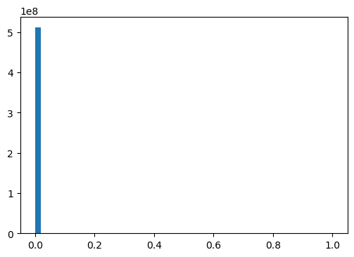
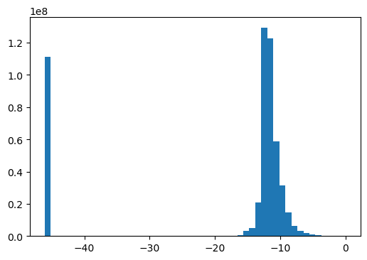
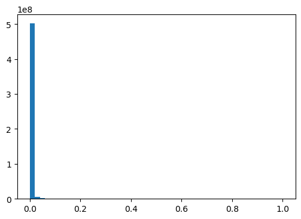
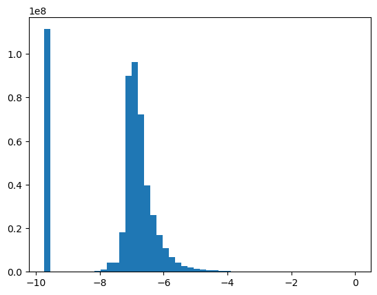
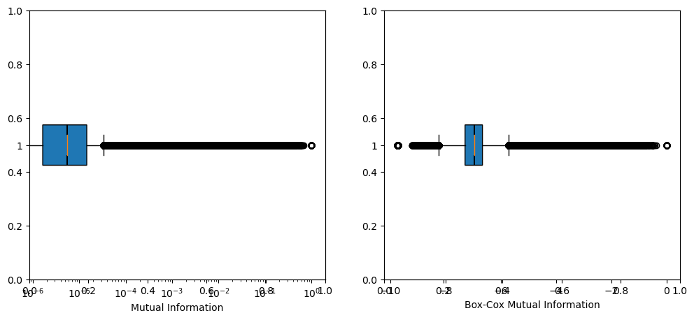
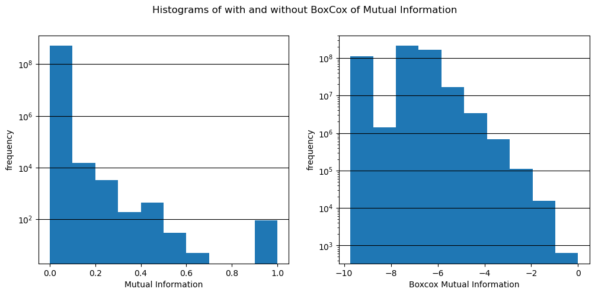
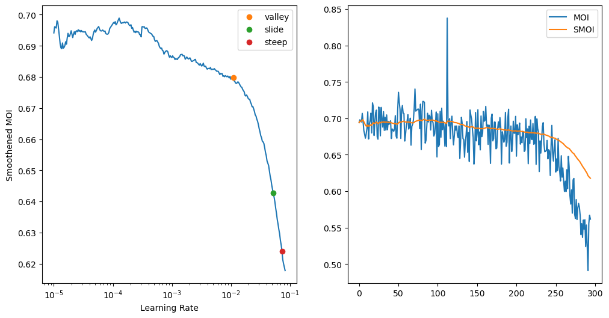
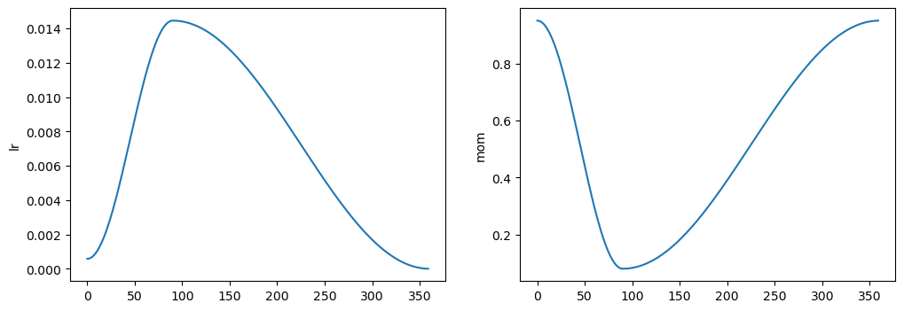
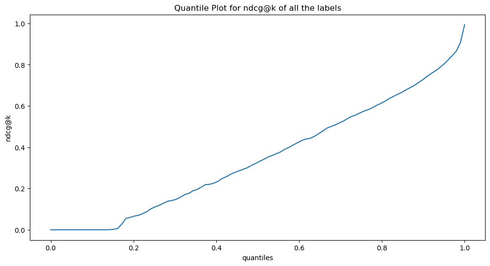

! [ -e /content ] && pip install -Uqq xcube # upgrade xcube on colabL2R Training
Training a learning-to-rank model
from xcube.l2r.all import *Make sure we have that “beast”:
ic(torch.cuda.get_device_name(default_device()));
test_eq(torch.cuda.get_device_name(0), torch.cuda.get_device_name(default_device()))
test_eq(default_device(), torch.device(0))
print(f"GPU memory = {torch.cuda.get_device_properties(default_device()).total_memory/1024**3}GB")ic| torch.cuda.get_device_name(default_device()): 'Quadro RTX 8000'GPU memory = 44.99969482421875GBSetting some environment variables:
# os.environ['CUDA_LAUNCH_BLOCKING'] = "1"Setting defaults for pandas and matplotlib:
# Set the default figure size
plt.rcParams["figure.figsize"] = (6, 4)In this tutorial we will train a l2r model. We will bootstrap the model using the data we prepared in tutorial booting L2R
Getting ready
Prepping l2r data for xcube’s L2RDataLoader
source = untar_xxx(XURLs.MIMIC3_L2R)
source.ls()(#11) [Path('/home/deb/.xcube/data/mimic3_l2r/info.pkl'),Path('/home/deb/.xcube/data/mimic3_l2r/code_descriptions.csv'),Path('/home/deb/.xcube/data/mimic3_l2r/mimic3-9k_tok_lbl_info.pkl'),Path('/home/deb/.xcube/data/mimic3_l2r/code_desc.pkl'),Path('/home/deb/.xcube/data/mimic3_l2r/p_TL.pkl'),Path('/home/deb/.xcube/data/mimic3_l2r/trn_val_split.pkl'),Path('/home/deb/.xcube/data/mimic3_l2r/mimic3-9k_tok.ft'),Path('/home/deb/.xcube/data/mimic3_l2r/mimic3-9k_lbl.ft'),Path('/home/deb/.xcube/data/mimic3_l2r/mimic3-9k.csv'),Path('/home/deb/.xcube/data/mimic3_l2r/scored_tokens.pth')...]Note: If you don’t have enough GPU/CPU memory just run the last cell of this section to load the pregenerated ones.
Here we can just load the file which contains the relevant information about the tokens, labels and their mutual-information-gain:
# Cheking if you have enough memory to set device
cuda_memory = torch.cuda.get_device_properties(torch.cuda.current_device()).total_memory/1024**3
if cuda_memory < 10.: print(f"Not Enough GPU Memory (just {cuda_memory} GB), we'll use {default_device(use=False)}")
l2r_bootstrap = torch.load(source/'mimic3-9k_tok_lbl_info.pkl', map_location=default_device())test_eq(l2r_bootstrap.keys(), ['toks', 'lbs', 'mut_info_lbl_entropy', 'mutual_info_jaccard'])
toks = l2r_bootstrap.get('toks', None)
lbs = l2r_bootstrap.get('lbs', None)
info = l2r_bootstrap.get('mutual_info_jaccard', None)
for o in (toks, lbs, info): assert o is not None
test_eq(info.shape, (len(toks), len(lbs)))info contains the mutual-information-gain values for the tokens and labels. In what follows we’ll toss in some pandas to take a good hard look at the data before we proceed towards making xcube’s L2RDataLoader:
Note: Storing the tokens and the labels in a dataframe as object will take up a lot of RAM space when we prepare that DataLoader. So we are going to store the corresponding token and label indices instead in a dataframe called df_l2r. We are also going to store the tokens and the labels with their corresponding indices in seperate dataframes (this will help in quick merging for analysis).
Here we will rank the tokens for each label based on the decreasing values of the mutual-info and stack them up with mutual-info.
ranked = info.argsort(descending=True, dim=0).argsort(dim=0)
info_ranked =torch.stack((info, ranked), dim=2).flatten(start_dim=1)cols = pd.MultiIndex.from_product([range(len(lbs)), ['mutual_info', 'rank']], names=['label', 'key2'])
df_l2r = pd.DataFrame(info_ranked, index=range(len(toks)), columns=cols)
df_l2r.index.name='token'df_l2r.head(3)| label | 0 | 1 | 2 | 3 | 4 | ... | 8917 | 8918 | 8919 | 8920 | 8921 | ||||||||||
|---|---|---|---|---|---|---|---|---|---|---|---|---|---|---|---|---|---|---|---|---|---|
| key2 | mutual_info | rank | mutual_info | rank | mutual_info | rank | mutual_info | rank | mutual_info | rank | ... | mutual_info | rank | mutual_info | rank | mutual_info | rank | mutual_info | rank | mutual_info | rank |
| token | |||||||||||||||||||||
| 0 | 0.000022 | 866.0 | 0.000011 | 1022.0 | 0.000022 | 1156.0 | 0.000011 | 823.0 | 0.000033 | 984.0 | ... | 0.000011 | 850.0 | 0.000033 | 944.0 | 0.000011 | 960.0 | 0.000011 | 771.0 | 6.888287e-07 | 31821.0 |
| 1 | 0.000000 | 56854.0 | 0.000000 | 41418.0 | 0.000000 | 56853.0 | 0.000000 | 41410.0 | 0.000000 | 22836.0 | ... | 0.000000 | 41421.0 | 0.000000 | 22861.0 | 0.000000 | 41423.0 | 0.000000 | 41412.0 | 0.000000e+00 | 32385.0 |
| 2 | 0.000000 | 56855.0 | 0.000000 | 41419.0 | 0.000000 | 56854.0 | 0.000000 | 41411.0 | 0.000000 | 22837.0 | ... | 0.000000 | 41422.0 | 0.000000 | 22862.0 | 0.000000 | 41424.0 | 0.000000 | 41413.0 | 0.000000e+00 | 32386.0 |
3 rows × 17844 columns
df_l2r = df_l2r.stack(level=0).reset_index().rename_axis(None, axis=1)
# the above pandas trick can be simulated using numpy as follows
# n = df_l2r.to_numpy()
# n_toks, n_lbs = len(df_l2r.index), len(df_l2r.columns.levels[0])
# n = n.reshape(-1, 2)
# tok_lbs_idxs = np.mgrid[slice(0,n_toks), slice(0,n_lbs)].reshape(2,-1).T
# n = np.concatenate((tok_lbs_idxs,n), axis=-1)
# df_l2r = pd.DataFrame(n, columns=['token', 'label', 'mutual_info', 'rank'])
df_l2r[['token', 'label']] = df_l2r[['token', 'label']].astype(np.int32)
test_eq(len(df_l2r), len(toks) * len(lbs))df_l2r.head(3)| token | label | mutual_info | rank | |
|---|---|---|---|---|
| 0 | 0 | 0 | 0.000022 | 866.0 |
| 1 | 0 | 1 | 0.000011 | 1022.0 |
| 2 | 0 | 2 | 0.000022 | 1156.0 |
df_l2r.memory_usage()/1024**3Index 1.192093e-07
token 1.906211e+00
label 1.906211e+00
mutual_info 1.906211e+00
rank 1.906211e+00
dtype: float64df_toks = pd.DataFrame([(i, w) for i,w in enumerate(toks)], columns=['token', 'tok_val'])
df_lbs = pd.DataFrame([(i,w) for i, w in enumerate(lbs)], columns=['lbl', 'lbl_val'])df_toks.head(3)| token | tok_val | |
|---|---|---|
| 0 | 0 | xxunk |
| 1 | 1 | xxpad |
| 2 | 2 | xxbos |
df_lbs.head(3)| lbl | lbl_val | |
|---|---|---|
| 0 | 0 | 003.0 |
| 1 | 1 | 003.1 |
| 2 | 2 | 003.8 |
You can save df_l2r, df_toks and df_lbs if you are working on your own dataset. In this case though untar_xxx has already downloaded those for you.
L(source.glob("**/*.ft"))(#3) [Path('/home/deb/.xcube/data/mimic3_l2r/mimic3-9k_tok.ft'),Path('/home/deb/.xcube/data/mimic3_l2r/mimic3-9k_lbl.ft'),Path('/home/deb/.xcube/data/mimic3_l2r/mimic3-9k_tok_lbl.ft')]Statistical Analysis
df_l2r = pd.read_feather(source/'mimic3-9k_tok_lbl.ft')
test_eq(df_l2r.dtypes.mutual_info, np.float32)df_l2r.head(3)| token | label | mutual_info | rank | |
|---|---|---|---|---|
| 0 | 0 | 0 | 0.000022 | 866.0 |
| 1 | 0 | 1 | 0.000011 | 1022.0 |
| 2 | 0 | 2 | 0.000022 | 1156.0 |
If you loaded the pregenerated df_l2r then you will see the column “bcx_mutual_info”. It is a box-cox transformation of the “mutual-info”. In this section we’ll justify that transformation. So let’s perform some statistical analysis of that mutual_info column before we build the L2RDataLoader in the next section.
# import gc; gc.collect()
# df_l2r.info()
# ic(df_l2r.memory_usage().sum()/1024**3)
# ic(sys.getsizeof(df_l2r)/1024**3);
# df_collab.token.nunique()mut_infos = df_l2r['mutual_info'].to_numpy()mut_infos.min(), mut_infos.max(), mut_infos.mean()(-6.852321e-05, 0.99999636, 7.175153e-05)skew(mut_infos)CPU times: user 2.22 s, sys: 1.14 s, total: 3.36 s
Wall time: 3.36 s142.75660007849734The mutual-info values are incredibly skewed. So we need to apply some transformation. Sometimes mut_infos might contain negs, we need to convert those to eps.
# np.where(mut_infos<0, 1, 0).sum() # or, better yet
where_negs = mut_infos < 0
ic(np.sum(where_negs))
eps = np.float32(1e-20)
mut_infos[where_negs] = eps
test_eq(np.sum(mut_infos<0), 0)
ic(np.min(mut_infos), np.max(mut_infos), np.mean(mut_infos));ic| np.sum(where_negs): 111226814
ic| np.min(mut_infos): 0.0
np.max(mut_infos): 0.99999636
np.mean(mut_infos): 7.697003e-05hist, bins, _ = plt.hist(mut_infos, bins=50)
# plt.yscale('log')
Applying log transform:
log_mut_infos = np.log(mut_infos + eps)np.isnan(log_mut_infos).sum(), np.isneginf(log_mut_infos).sum(), np.isinf(log_mut_infos).sum()(0, 0, 0)CPU times: user 2.35 s, sys: 959 ms, total: 3.31 s
Wall time: 3.3 s-1.3383214188674972A little better skewness than before!
hist, bins, _ = plt.hist(log_mut_infos, bins=50,)
Applying sqrt transform:
sqrt_mut_infos = np.sqrt(mut_infos)np.isnan(sqrt_mut_infos).sum(), np.isinf(sqrt_mut_infos).sum(), np.isneginf(sqrt_mut_infos).sum()(0, 0, 0)CPU times: user 2.38 s, sys: 1.25 s, total: 3.63 s
Wall time: 3.63 s16.40865608826817Worse than log transform!
hist, bins, _ = plt.hist(sqrt_mut_infos, bins=50)
Apply box-cox transfrom:
bcx_mut_infos, *_ = boxcox(mut_infos+eps)/home/deb/miniconda3/envs/deep/lib/python3.10/site-packages/scipy/stats/_morestats.py:933: RuntimeWarning: overflow encountered in power
variance = np.var(data**lmb / lmb, axis=0)
/home/deb/miniconda3/envs/deep/lib/python3.10/site-packages/numpy/core/_methods.py:233: RuntimeWarning: invalid value encountered in subtract
x = asanyarray(arr - arrmean)np.isnan(bcx_mut_infos).sum(), np.isinf(bcx_mut_infos).sum(), np.isneginf(bcx_mut_infos).sum()(0, 0, 0)CPU times: user 2.45 s, sys: 1.04 s, total: 3.49 s
Wall time: 3.49 s-0.885981418331696This is the best skew so we’ll go with boxcox.
df_l2r['bcx_mutual_info'] = bcx_mut_infoshist, bins, _ = plt.hist(bcx_mut_infos, bins=50)
np.min(bcx_mut_infos), np.max(bcx_mut_infos), np.mean(bcx_mut_infos), np.median(bcx_mut_infos)(-9.734209, -3.6358892e-06, -7.381837, -6.9605794)# from IPython.display import clear_output
# clear_output(wait=True)
# from tqdm import tqdm
# from time import sleep
# import psutil
# with tqdm(total=100, desc='cpu%', position=1) as cpubar, tqdm(total=100, desc='ram%', position=0) as rambar:
# while True:
# rambar.n=psutil.virtual_memory().percent
# cpubar.n=psutil.cpu_percent()
# rambar.refresh()
# cpubar.refresh()
# sleep(0.5)
# clear_output(wait=True)Box plots using matplotlib
fig, (ax1, ax2) = plt.subplots(1, 2, figsize=(12, 5))
ax1 = fig.add_subplot(1, 2, 1)
ax2 = fig.add_subplot(1, 2, 2)
ax1.boxplot(mut_infos, vert=0, notch=True, patch_artist=True)
ax1.set_xscale('log')
ax1.set_xlabel('Mutual Information')
ax2.boxplot(bcx_mut_infos, vert=0, notch=True, patch_artist=True)
# ax2.set_xscale('symlog')
ax2.set_xlabel('Box-Cox Mutual Information')
plt.show()
CPU times: user 1min 35s, sys: 9.16 s, total: 1min 44s
Wall time: 1min 44sHistograms and kde using matplotlib:
fig, (ax1, ax2) = plt.subplots(1, 2, figsize=(12, 5))
# hist, bins, pathches = ax1.hist(df_l2r['mutual_info'])
hist, bins, pathches = ax1.hist(mut_infos)
ax1.set_xlabel('Mutual Information')
ax1.set_ylabel('frequency')
ax1.grid(axis='y', color='black')
ax1.set_yscale('log')
# ax2.hist(df_l2r['bcx_mutual_info'])
ax2.hist(bcx_mut_infos)
ax2.set_xlabel('Boxcox Mutual Information')
ax2.set_ylabel('frequency')
ax2.grid(axis='y', color='black')
ax2.set_yscale('log')
fig.suptitle('Histograms of with and without BoxCox of Mutual Information')
plt.show()
bdrs = [bins[i:i+2] for i in range(0, len(bins)-1)]
pd.DataFrame({'mut_infos bdrs': bdrs, 'counts': hist})| mut_infos bdrs | counts | |
|---|---|---|
| 0 | [0.0, 0.09999963641166687] | 511675599.0 |
| 1 | [0.09999963641166687, 0.19999927282333374] | 14848.0 |
| 2 | [0.19999927282333374, 0.2999989092350006] | 3323.0 |
| 3 | [0.2999989092350006, 0.3999985456466675] | 191.0 |
| 4 | [0.3999985456466675, 0.49999818205833435] | 454.0 |
| 5 | [0.49999818205833435, 0.5999978184700012] | 30.0 |
| 6 | [0.5999978184700012, 0.6999974250793457] | 5.0 |
| 7 | [0.6999974250793457, 0.799997091293335] | 0.0 |
| 8 | [0.799997091293335, 0.8999967575073242] | 0.0 |
| 9 | [0.8999967575073242, 0.9999963641166687] | 94.0 |
# from scipy.stats import gaussian_kde
# density = gaussian_kde(df_l2r['mutual_info'])
# xs = np.linspace(0, 1, 200)
# density.covariance_factor = lambda : .25
# density._compute_covariance()
# plt.plot(xs, density(xs))
# plt.show()We can now build the Dataloaders object from this dataframe df_collab, by defaultit takes the first column as the user (in our case the token) and the second column as the item (in our case the label), and the third column as the ratings (in our case the frequency):
Build L2RDataloader
In this section we’ll build L2RDataLoader for Learning to Rank (L2R)
df_l2r = pd.read_feather(source/'mimic3-9k_tok_lbl.ft')df_l2r = df_l2r.drop(['mutual_info', 'bcx_mutual_info'], axis=1)
df_l2r.token.nunique(), df_l2r.label.nunique()
df_l2r.head(3)| token | label | rank | |
|---|---|---|---|
| 0 | 0 | 0 | 866.0 |
| 1 | 0 | 1 | 1022.0 |
| 2 | 0 | 2 | 1156.0 |
df_tiny: If we need a smaller dataset for quick iterations
Note: For technical reasons behind building a L2RDataloader the number of tokens should be \(x (mod 64) \equiv 8\).
num_toks, num_lbs = 8 + 5*64, 104# might have to repeat this a few times until the cell asserst true
np.random.seed(101)
rnd_toks = np.random.randint(0, len(df_l2r.token.unique()), size=(num_toks,) )
np.random.seed(101)
rnd_lbs = np.random.randint(0, len(df_l2r.label.unique()), size=(num_lbs,) )
mask = df_l2r.token.isin(rnd_toks) & df_l2r.label.isin(rnd_lbs)
df_tiny = df_l2r[mask].reset_index(drop=True)
test_eq(df_tiny.token.nunique(), num_toks)
test_eq(df_tiny.label.nunique(), num_lbs)
# df_tiny.apply(lambda x: x.nunique())df_tiny.head()| token | label | rank | |
|---|---|---|---|
| 0 | 22 | 49 | 1877.0 |
| 1 | 22 | 239 | 21308.0 |
| 2 | 22 | 394 | 39854.0 |
| 3 | 22 | 436 | 8618.0 |
| 4 | 22 | 561 | 1646.0 |
Let’s just delete the df_l2r to free up RAM:
# df_l2r = pd.DataFrame()
# lst = [df_l2r]
# del lst
# del df_l2r
# import gc; gc.collect()Only for df_tiny:
Due to random sampling the rankings are not uniform i.e., not from 0 to num_toks. A litte preprocessing to make sure that we have uniform rankings for all labels.
grouped = df_tiny.groupby('label', group_keys=False)def sort_rerank(df, column='rank'):
df = df.sort_values(by=column)
df['rank'] = range(len(df))
return dfdf_tiny = grouped.apply(sort_rerank)
dict_grouped = dict(list(df_tiny.groupby('label')))
# checking a random label has ranks 0 thru `num_toks`
a_lbl = random.choice(list(dict_grouped.keys()))
test_eq(range(num_toks), dict_grouped[a_lbl]['rank'].values)dict_grouped[a_lbl].head()| token | label | rank | |
|---|---|---|---|
| 5660 | 9679 | 3455 | 0 |
| 8364 | 13976 | 3455 | 1 |
| 4620 | 6801 | 3455 | 2 |
| 772 | 1788 | 3455 | 3 |
| 2748 | 4458 | 3455 | 4 |
Using Pandas groupby to add quantized relevance scores to each token-label pair based on the corresponding ranks:
grouped = df_tiny.groupby('label')# dict_grouped = dict(list(grouped))
# _tmp = dict_grouped[16].copy()
# _tmp.head()def cut(df, qnts, column='rank'):
num = df.to_numpy()
bins = np.quantile(num[:, -1], qnts)
num[:, -1] = len(bins) - np.digitize(num[:, -1], bins)
# bins = np.quantile(df['rank'], qnts)
# df[column] = len(bins) - np.digitize(df['rank'], bins)
# df[column] = pd.qcut(df[column], qnts, labels=labels)
return numqnts = np.concatenate([array([0]), np.geomspace(1e-2, 1, 10)])
scored = grouped.apply(cut, qnts)11.9 ms ± 279 µs per loop (mean ± std. dev. of 15 runs, 50 loops each)Pandas groupby was just to ellucidate how we do the scoring. It ain’t all that good when dealing with big datasets. So in reality we are going to use tensorized implemnetation. Follow along:
pdl = PreLoadTrans(df_tiny, device=torch.device('cpu'))If interested please read sourcecode of [PreLoadTrans.quantized_score](https://debjyotiSRoy.github.io/xcube/l2r.data.load.html#preloadtrans.quantized_score):
# %%timeit -n 50 -r 15
scored_toks = pdl.quantized_score()CPU times: user 1e+03 ns, sys: 0 ns, total: 1e+03 ns
Wall time: 3.34 µs/home/deb/xcube/xcube/l2r/data/load.py:56: UserWarning: torch.searchsorted(): input value tensor is non-contiguous, this will lower the performance due to extra data copy when converting non-contiguous tensor to contiguous, please use contiguous input value tensor if possible. This message will only appear once per program. (Triggered internally at /opt/conda/conda-bld/pytorch_1670525541990/work/aten/src/ATen/native/BucketizationUtils.h:33.)
relv_scores = bins.shape[0] - torch.searchsorted(bins.T, data[:, :, -1], right=False) # shape (8922, 57352)test_eqs(scored_toks.shape,
(df_tiny.label.nunique(), df_tiny.token.nunique(), 4),
(pdl.num_lbs, pdl.num_toks, 4))Save if you want to! BTW untar_xxx has got the one for the full dataset:
L(source.glob("**/*scored*.pth"))(#1) [Path('/home/deb/.xcube/data/mimic3_l2r/scored_tokens.pth')]Create training and validation split:
Remember: In scored_toks dim 0: labels, dim 1: 4 tuple (token, label, rank, score). Below is an example:
tok, lbl, rank, score = L(scored_toks[97, 32], use_list=True).map(Tensor.item)
ic(tok, lbl, rank, score);ic| tok: 41514.0, lbl: 8124.0, rank: 234.0, score: 4.0df_tiny[(df_tiny.token == tok) & (df_tiny.label == lbl)]| token | label | rank | |
|---|---|---|---|
| 23393 | 41514 | 8124 | 234 |
Remember: For each label the tokens are ranked 0 through num_toks
ranks = scored_toks[:, :, 2].unique(dim=1).sort(-1).values
ranks_shouldbe = torch.arange(scored_toks.shape[1], dtype=torch.float).expand(scored_toks.shape[0], -1)
test_eq(ranks, ranks_shouldbe)Remember: For each label quantized_score scores the tokens on a log scale based on their ranks. The score scale is 1-101: 101 being the highest score (assigned to most relevant token), and 1 is the lowest score (assigned to least relevant tokens).
scores = scored_toks[:, :, -1].unique(dim=1).sort(-1).values
scores[0]tensor([ 1., 1., 1., 1., 2., 2., 2., 2., 2., 2., 3., 3.,
3., 3., 4., 4., 4., 4., 4., 4., 5., 5., 5., 6.,
6., 6., 6., 6., 6., 7., 7., 7., 7., 7., 8., 8.,
8., 8., 8., 8., 8., 8., 9., 9., 9., 9., 9., 9.,
10., 10., 10., 10., 11., 11., 11., 11., 11., 11., 12., 12.,
12., 12., 12., 13., 13., 13., 13., 13., 13., 14., 14., 14.,
14., 15., 15., 15., 16., 16., 16., 17., 17., 17., 17., 17.,
18., 18., 18., 19., 19., 19., 19., 20., 20., 20., 20., 21.,
21., 21., 21., 22., 22., 22., 22., 23., 23., 23., 23., 24.,
24., 24., 25., 25., 25., 26., 26., 27., 27., 27., 28., 28.,
29., 29., 30., 30., 31., 31., 32., 32., 33., 34., 34., 35.,
36., 37., 38., 39., 40., 42., 43., 45., 48., 51., 55., 63.,
101.])scored_toks, binned_toks, probs, is_valid, bin_size, bin_bds = pdl.train_val_split()CPU times: user 90.4 ms, sys: 3.56 ms, total: 94 ms
Wall time: 13.8 msval_sl = pdl.pad_split()
test_eq(is_valid.sum(dim=-1).unique().item(), val_sl)
print(f"{val_sl=}")val_sl=16
CPU times: user 353 ms, sys: 0 ns, total: 353 ms
Wall time: 48.4 msTaking a look at the train/valid split for some labels (just to make sure we ticked all boxes!):
df1 = pd.DataFrame(scored_toks[89], columns=['token', 'label', 'rank', 'score']).sort_values(by='score', ascending=False)
df1.head()| token | label | rank | score | |
|---|---|---|---|---|
| 226 | 28488.0 | 6820.0 | 0.0 | 101.0 |
| 225 | 2274.0 | 6820.0 | 1.0 | 63.0 |
| 224 | 50503.0 | 6820.0 | 2.0 | 55.0 |
| 223 | 56935.0 | 6820.0 | 3.0 | 51.0 |
| 222 | 20945.0 | 6820.0 | 4.0 | 48.0 |
name = partial(namestr, namespace=globals())
row_vals = apply(torch.Tensor.size, (scored_toks, binned_toks, probs, is_valid, bin_size, bin_bds))
pd.DataFrame(index = list(itertools.chain.from_iterable(apply(name, [scored_toks, binned_toks, probs, is_valid, bin_size, bin_bds]))), columns=['shape'], data={'shape': row_vals})| shape | |
|---|---|
| scored_toks | (104, 328, 4) |
| binned_toks | (104, 328) |
| probs | (104, 328) |
| is_valid | (104, 328) |
| bin_size | (11,) |
| bin_bds | (8, 2) |
Lowest numbered bin contains irrelevant tokens for a label, and the highest numbered bin contains most relevant tokens:
df2 = pd.DataFrame({'bin #': range(len(bin_size)),
#'bin_bds': list(bin_bds.numpy()),
'bin_size': bin_size})
df2.head()| bin # | bin_size | |
|---|---|---|
| 0 | 0 | 30 |
| 1 | 1 | 180 |
| 2 | 2 | 75 |
| 3 | 3 | 27 |
| 4 | 4 | 10 |
df_toks = pd.read_feather(source/'mimic3-9k_tok.ft')
df_lbs = pd.read_feather(source/'mimic3-9k_lbl.ft')
a_lbl = np.random.choice(pdl.num_lbs)
df_lbs.iloc[[a_lbl]]
# df_lbs.loc[[a_lbl]]| lbl | lbl_val | |
|---|---|---|
| 52 | 52 | 018.95 |
df3 = pd.DataFrame({'token': scored_toks[a_lbl, :, 0] ,'score': scored_toks[a_lbl, :, -1], 'probs': probs[a_lbl],
'binned_toks': binned_toks[a_lbl],
#'bds': list(bin_bds[binned_toks[a_lbl]].numpy()),
'size': bin_size[binned_toks[a_lbl]],
'is_valid': is_valid[a_lbl]})
df3 = df_toks.merge(df3, on='token')
df3.sort_values(by='score', ascending=False).head(20)| token | tok_val | score | probs | binned_toks | size | is_valid | |
|---|---|---|---|---|---|---|---|
| 30 | 4924 | distance | 101.0 | 0.333333 | 10 | 1 | 0.0 |
| 25 | 4056 | defined | 63.0 | 0.333333 | 6 | 1 | 1.0 |
| 10 | 2100 | wnl | 55.0 | 0.166667 | 5 | 4 | 0.0 |
| 2 | 436 | change | 51.0 | 0.166667 | 5 | 4 | 0.0 |
| 3 | 591 | motion | 48.0 | 0.166667 | 5 | 4 | 0.0 |
| 5 | 1327 | residual | 45.0 | 0.166667 | 5 | 4 | 0.0 |
| 0 | 22 | patient | 43.0 | 0.066667 | 4 | 10 | 0.0 |
| 7 | 1788 | thursday | 42.0 | 0.066667 | 4 | 10 | 0.0 |
| 6 | 1699 | clopidogrel | 40.0 | 0.066667 | 4 | 10 | 0.0 |
| 9 | 2021 | saturations | 39.0 | 0.066667 | 4 | 10 | 0.0 |
| 8 | 1944 | 4l | 38.0 | 0.066667 | 4 | 10 | 0.0 |
| 11 | 2265 | hemodynamics | 37.0 | 0.066667 | 4 | 10 | 0.0 |
| 13 | 2467 | according | 36.0 | 0.066667 | 4 | 10 | 0.0 |
| 12 | 2274 | medial | 35.0 | 0.066667 | 4 | 10 | 0.0 |
| 14 | 2998 | synagis | 34.0 | 0.066667 | 4 | 10 | 1.0 |
| 15 | 3159 | film | 34.0 | 0.066667 | 4 | 10 | 0.0 |
| 20 | 3748 | dispo | 33.0 | 0.024691 | 3 | 27 | 0.0 |
| 16 | 3401 | twenty | 32.0 | 0.024691 | 3 | 27 | 0.0 |
| 18 | 3575 | attached | 32.0 | 0.024691 | 3 | 27 | 0.0 |
| 27 | 4598 | stopping | 31.0 | 0.024691 | 3 | 27 | 0.0 |
test_eqs(is_valid[a_lbl].sum(), df3['is_valid'].sum(), pdl.val_sl)df3[df3['is_valid'] == 1].sort_values(by='score', ascending=False)#.groupby('binned_toks').size()| token | tok_val | score | probs | binned_toks | size | is_valid | |
|---|---|---|---|---|---|---|---|
| 25 | 4056 | defined | 63.0 | 0.333333 | 6 | 1 | 1.0 |
| 14 | 2998 | synagis | 34.0 | 0.066667 | 4 | 10 | 1.0 |
| 29 | 4750 | ccy | 29.0 | 0.024691 | 3 | 27 | 1.0 |
| 17 | 3469 | brace | 28.0 | 0.024691 | 3 | 27 | 1.0 |
| 28 | 4608 | pericarditis | 25.0 | 0.024691 | 3 | 27 | 1.0 |
| 170 | 32817 | cadmium | 19.0 | 0.008889 | 2 | 75 | 1.0 |
| 195 | 36874 | discrepant | 18.0 | 0.008889 | 2 | 75 | 1.0 |
| 47 | 8157 | fundi | 17.0 | 0.008889 | 2 | 75 | 1.0 |
| 272 | 48514 | vorinostat | 13.0 | 0.008889 | 2 | 75 | 1.0 |
| 306 | 54261 | entroclysis | 13.0 | 0.008889 | 2 | 75 | 1.0 |
| 114 | 21311 | icbg | 8.0 | 0.003704 | 1 | 180 | 1.0 |
| 183 | 35391 | bender | 5.0 | 0.003704 | 1 | 180 | 1.0 |
| 216 | 39783 | susbsequently | 4.0 | 0.003704 | 1 | 180 | 1.0 |
| 261 | 46217 | cuurently | 3.0 | 0.003704 | 1 | 180 | 1.0 |
| 302 | 53619 | transfred | 1.0 | 0.022222 | 0 | 30 | 1.0 |
| 322 | 56325 | psuedoanuerysm | 1.0 | 0.022222 | 0 | 30 | 1.0 |
top_lens = pdl.count_topbins()
test_eq(top_lens.shape, [pdl.num_lbs])
print(f"For {torch.where(top_lens >= 1)[0].numel()} labels out of total {pdl.num_lbs}, in the validation set we have at least one top 2 bin")For 56 labels out of total 104, in the validation set we have at least one top 2 binPrepare the train/val dataset:
trn_dset, val_dset = pdl.datasets()test_eq(val_dset.shape, (scored_toks.shape[0], val_sl, scored_toks.shape[2]))
test_eq(trn_dset.shape, scored_toks.shape)
ic(trn_dset.shape, val_dset.shape);ic| trn_dset.shape: torch.Size([104, 328, 4])
val_dset.shape: torch.Size([104, 16, 4])Again, untar_xxx has got the trn/val split for the full dataset:
L(source.glob("**/*split*.pkl"))(#1) [Path('/home/deb/.xcube/data/mimic3_l2r/trn_val_split.pkl')]If you want to load the splits for the full dataset:
trn_dset, val_dset = torch.load(source/'trn_val_split.pkl')
ic(trn_dset.shape, val_dset.shape);ic| trn_dset.shape: torch.Size([8922, 57352, 4])
val_dset.shape: torch.Size([8922, 32, 4])Now we are ready to create the train/valid DataLoaders:
Implementation note: We have written the training dataloader which we call L2RDataLoader. It ofcourse inherits from fastai’s incredibly hackable DataLoader class. In a little more technical terms, another way to say this is that L2RDataLoader provides different implementation of the callbacks before_iter and create_batches. However for the validation dataloader we directly use fastai’s DataLoader. Lastly, we store the training and validation dataloder objects using fastai’s DataLoaders class.
bs_full = 32
bs_tiny = 8
sl = 64
lbs_chunks_full = 4
lbs_chunks_tiny = 32
trn_dl = L2RDataLoader(dataset=trn_dset, sl=sl, bs=bs_tiny, lbs_chunks=lbs_chunks_tiny, shuffle=False, after_batch=partial(to_device, device=default_device(use=True)), num_workers=0)Don’t forget to check the length
len(trn_dl)24ic(trn_dl.num_workers, trn_dl.fake_l.num_workers);ic| trn_dl.num_workers: 1, trn_dl.fake_l.num_workers: 0xb = trn_dl.one_batch()
ic(xb.shape, xb.device);ic| xb.shape: torch.Size([8, 4, 64, 4])
xb.device: device(type='cuda', index=0)A fake rundown of the training loop to make sure the training dataloader got created alright:
for xb in progress_bar(trn_dl):
time.sleep(0.01)
100.00% [24/24 00:00<00:00]
CPU times: user 1.4 s, sys: 12.8 ms, total: 1.41 s
Wall time: 298 msfrom fastai.data.load import DataLoader
from fastai.data.core import DataLoadersval_dset = val_dset.unsqueeze(0)
val_dl = DataLoader(val_dset, bs=1, shuffle=False, after_batch=partial(to_device, device=default_device()), num_workers=0)
ic(val_dl.num_workers, val_dl.fake_l.num_workers);ic| val_dl.num_workers: 1, val_dl.fake_l.num_workers: 0xb = val_dl.one_batch()
ic(xb.shape, xb.device);ic| xb.shape: torch.Size([1, 104, 16, 4])
xb.device: device(type='cuda', index=0)A fake rundown of the validation set to make sure the validation dataloader got created alright:
for xb in progress_bar(val_dl):
time.sleep(0.01)
100.00% [1/1 00:00<00:00]
CPU times: user 6.07 ms, sys: 0 ns, total: 6.07 ms
Wall time: 15.8 msBunching together the training and validation dataloaders:
dls = DataLoaders(trn_dl, val_dl)Training
…yes, finally!
Keeping records:
m = ['lin', 'nn']
algos = ['ranknet', 'lambdarank']
idx = pd.Index(['tiny', 'full'], name='dataset')
cols = pd.MultiIndex.from_product([m, algos], names = ['model', 'algo'])
df = pd.DataFrame(columns=cols, index=idx)
df[:] = 'TBD'
df.loc['tiny']['nn']['ranknet'] = "{'grad_func': functools.partial(<function rank_loss3 at 0x7f6f87e800d0>, gain_fn='exp', k=6), 'opt_func': functools.partial(<function RMSProp at 0x7f6f87e31870>, mom=0.9, wd=0.2), 'opt': None, 'lr': 0.001, 'loss_func': <function loss_fn2 at 0x7f6f7cdb1990>, 'num_factors': 200, 'n_act': 100, 'num_lbs': 105, 'num_toks': 329, 'seed': 877979, 'epochs': 15, 'best': 75.66}"
df.loc['tiny']['lin']['ranknet'] = "{'grad_func': functools.partial(<function rank_loss3 at 0x7f6f87e800d0>, gain_fn='exp', k=6), 'opt_func': functools.partial(<function SGD at 0x7f6f87e31750>, mom=0.9), 'opt': None, 'lr': 0.0001, 'loss_func': <function loss_fn2 at 0x7f6f73f748b0>, 'num_factors': 200, 'num_lbs': 105, 'num_toks': 329, 'seed': 877979, 'epochs': 15, 'best': 75}"
df.loc['tiny']['nn']['lambdarank'] = "{'grad_func': functools.partial(<function rank_loss3 at 0x7fdc0ed6ad40>, gain_fn='exp', k=15, lambrank=True), 'opt_func': functools.partial(<function RMSProp at 0x7fdc0ed28280>, mom=0.9, wd=0.0), 'opt': <fastai.optimizer.Optimizer object at 0x7fdc0ede79a0>, 'lr': 0.001, 'loss_func': <function loss_fn2 at 0x7fdc0ed6ae60>, 'lr_max': 0.01445439737290144, 'num_factors': 200, 'n_act': 100, 'num_lbs': 105, 'num_toks': 329, 'seed': 1, 'epochs': 15, 'best': 'ndcg_at_6 = 39.05', 'model': 'L2R_NN(\\n (token_factors): Embedding(329, 200, padding_idx=328)\\n (label_factors): Embedding(105, 200, padding_idx=104)\\n (layers): Sequential(\\n (0): Linear(in_features=200, out_features=100, bias=True)\\n (1): ReLU()\\n (2): Linear(in_features=100, out_features=1, bias=True)\\n (3): Dropout(p=0.2, inplace=False)\\n )\\n)\\n self.n_act = 100, self.dp = 0.2'}"
df.loc['tiny']['lin']['lambdarank'] = "{'grad_func': functools.partial(<function rank_loss3 at 0x7f4c7dd42c20>, gain_fn='exp', k=15, lambrank=True), 'opt_func': functools.partial(<function RMSProp at 0x7f4c7dd04160>, mom=0.9, wd=0.0), 'opt': <fastai.optimizer.Optimizer object at 0x7f4c5c1da410>, 'lr': 0.007, 'loss_func': <function loss_fn2 at 0x7f4c74b9add0>, 'num_factors': 200, 'n_act': None, 'num_lbs': 105, 'num_toks': 329, 'seed': 1, 'epochs': 15, 'best': 52.21}"
df.loc['full']['nn']['ranknet'] = 'TBD'
df.loc['full']['lin']['ranknet'] = {'lr': 1e-5, 'opt': 'partial(SGD, mom=0.9, wd=0.0)', 'best': 63.73, 'epochs': 3, 'seed': 1, 'gain': 'cubic', 'factors': 100}
df.loc['full']['nn']['lambdarank'] = 'TBD'
df.loc['full']['lin']['lambdarank'] = {'lr': [7e-4, 7e-4, 7e-4], 'opt': 'partial(RMSProp, mom=0.9, wd=0.0)', 'best': 12.85, 'epochs': [4, 2, 4, 4], 'seed': 1, 'gain': 'exp', 'factors': 200}df| model | lin | nn | ||
|---|---|---|---|---|
| algo | ranknet | lambdarank | ranknet | lambdarank |
| dataset | ||||
| tiny | {'grad_func': functools.partial(<function rank_loss3 at 0x7f6f87e800d0>, gain_fn='exp', k=6), 'opt_func': functools.partial(<function SGD at 0x7f6f87e31750>, mom=0.9), 'opt': None, 'lr': 0.0001, 'loss_func': <function loss_fn2 at 0x7f6f73f748b0>, 'num_factors': 200, 'num_lbs': 105, 'num_toks': 329, 'seed': 877979, 'epochs': 15, 'best': 75} | {'grad_func': functools.partial(<function rank_loss3 at 0x7f4c7dd42c20>, gain_fn='exp', k=15, lambrank=True), 'opt_func': functools.partial(<function RMSProp at 0x7f4c7dd04160>, mom=0.9, wd=0.0), 'opt': <fastai.optimizer.Optimizer object at 0x7f4c5c1da410>, 'lr': 0.007, 'loss_func': <function loss_fn2 at 0x7f4c74b9add0>, 'num_factors': 200, 'n_act': None, 'num_lbs': 105, 'num_toks': 329, 'seed': 1, 'epochs': 15, 'best': 52.21} | {'grad_func': functools.partial(<function rank_loss3 at 0x7f6f87e800d0>, gain_fn='exp', k=6), 'opt_func': functools.partial(<function RMSProp at 0x7f6f87e31870>, mom=0.9, wd=0.2), 'opt': None, 'lr': 0.001, 'loss_func': <function loss_fn2 at 0x7f6f7cdb1990>, 'num_factors': 200, 'n_act': 100, 'num_lbs': 105, 'num_toks': 329, 'seed': 877979, 'epochs': 15, 'best': 75.66} | {'grad_func': functools.partial(<function rank_loss3 at 0x7fdc0ed6ad40>, gain_fn='exp', k=15, lambrank=True), 'opt_func': functools.partial(<function RMSProp at 0x7fdc0ed28280>, mom=0.9, wd=0.0), 'opt': <fastai.optimizer.Optimizer object at 0x7fdc0ede79a0>, 'lr': 0.001, 'loss_func': <function loss_fn2 at 0x7fdc0ed6ae60>, 'lr_max': 0.01445439737290144, 'num_factors': 200, 'n_act': 100, 'num_lbs': 105, 'num_toks': 329, 'seed': 1, 'epochs': 15, 'best': 'ndcg_at_6 = 39.05', 'model': 'L2R_NN(\n (token_factors): Embedding(329, 200, padding_idx=328)\n (label_factors): Embedding(105, 200, paddin... |
| full | {'lr': 1e-05, 'opt': 'partial(SGD, mom=0.9, wd=0.0)', 'best': 63.73, 'epochs': 3, 'seed': 1, 'gain': 'cubic', 'factors': 100} | {'lr': [0.0007, 0.0007, 0.0007], 'opt': 'partial(RMSProp, mom=0.9, wd=0.0)', 'best': 12.85, 'epochs': [4, 2, 4, 4], 'seed': 1, 'gain': 'exp', 'factors': 200} | TBD | TBD |
Get the DataLoaders:
tmp = Path.cwd()/'tmp'
tmp.mkdir(exist_ok=True)
list_files(str(tmp))tmp/
mimic3-9k_dls_clas_tiny.pkl
nn_lambdarank_tiny.pth
mimic3-9k_dls_clas_tiny_r.pkl
dls_full.pkl
dls_tiny.pkl
lin_lambdarank_full.pth
lin_lambdarank_tiny.pth
.ipynb_checkpoints/
models/
mimic3-9k_lm_finetuned_r.pth
mimic3-9k_clas_full.pth
mimic3-9k_clas_tiny_r.pth
mimic3-9k_lm_finetuned.pth
mimic3-9k_clas_tiny_vocab.pkl
mimic3-9k_clas_tiny_r_vocab.pkl
mimic3-9k_clas_tiny.pth
mimic3-9k_clas_full_vocab.pklset_seed(1, True)Setting the fname capturing which model (neural net vs linear) we want to run, which algorithm (ranknet vs lambdarank) and on which dataset (tiny vs full). This fname is then used to automaticall grab the appropriate dataloder, make the model and set relevant learner parameters.
fname = 'lin_lambdarank_tiny'
monitor = 'ndcg_at_6' if 'lambda' in fname else 'acc'
s = fname.split('_')
print(f'We will run a {s[0]} model using the {s[1]} algorithm on the {s[2]} dataset. And our metric of interest(moi) is {monitor}.')We will run a lin model using the lambdarank algorithm on the tiny dataset. And our metric of interest(moi) is ndcg_at_6.CPU times: user 11.7 ms, sys: 8.62 s, total: 8.63 s
Wall time: 15.3 sMake the Model:
Based on the dataset:
Datasizes = namedtuple("Datasizes", ('num_lbs', 'num_toks', 'num_factors'))
sizes = Datasizes(*dls.dataset.shape[:-1], 200) # or pdl.num_lbs, pdl.num_toks, 200
sizesDatasizes(num_lbs=104, num_toks=328, num_factors=200)model = (L2R_NN(*sizes, layers=[100], embed_p=0.2, ps=[0.1], bn_final=False, y_range=None) if 'nn' in fname else L2R_DotProductBias(*sizes,y_range=None)).to(default_device())Create the Learner and train:
from fastai.optimizer import *def grab_learner_params(fname):
"Get relevant `learner` params depending on the `fname`"
nn, lambrank, tiny = [sp == n for sp, n in zip(fname.split('_'), ['nn', 'lambdarank', 'tiny'])]
# create a dictionary that maps binary conditions to tuple (nn, lambdarank, tiny)
conditions = {
(True, True, True): dict(lr = 1e-3, lambrank = lambrank, opt_func = partial(RMSProp, mom=0.9, wd=0.0)), # nn_lambdarank_tiny
(True, True, False): dict(lr = 1e-2, lambrank = lambrank, opt_func = partial(Adam, mom=0.9, wd=0.1)), # nn_lambdarank_full
(True, False, True): dict(lr = 1e-2, lambrank = lambrank, opt_func = partial(RMSProp, mom=0.9, wd=0.2)), # nn_ranknet_tiny
(True, False, False): dict(lr = None, lambrank = lambrank, opt_func = None), # nn_ranknet_full
(False, True, True): dict(lr = 7e-3, lambrank = lambrank, opt_func = partial(RMSProp, mom=0.9, wd=0.0)), # lin_lambdarank_tiny
(False, True, False): dict(lr = 7e-3, lambrank = lambrank, opt_func = partial(RMSProp, mom=0.9, wd=0.0)), # lin_lambdarank_full
(False, False, True): dict(lr = 1e-4, lambrank = lambrank, opt_func = None), # lin_ranknet_tiny
(False, False, False): dict(lr = None, lambrank = lambrank, opt_func = None), # lin_ranknet_full
}
learner_params = conditions.get((nn, lambrank, tiny), (True, True, True))
default_cbs = [TrainEval(), TrackResults(train_metrics=False, beta=0.98), ProgressBarCallback(), Monitor(), SaveCallBack(fname, monitor=monitor)]
grad_fn = partial(rank_loss3, gain_fn='exp', k=15)
learner_params = {**learner_params, **{'cbs':default_cbs, 'grad_fn':grad_fn}}
return learner_paramslearner_params = grab_learner_params(fname)
learner_params{'lr': 0.007,
'lambrank': True,
'opt_func': functools.partial(<function RMSProp>, mom=0.9, wd=0.0),
'cbs': [TrainEval, TrackResults, ProgressBarCallback, Monitor, SaveCallBack],
'grad_fn': functools.partial(<function rank_loss3>, gain_fn='exp', k=15)}learner = get_learner(model, dls, **learner_params)learner.path = tmpLet’s record some useful hyperparameters in a record dict which we can store in the dataframe in the record keeping section:
learner_attrs = ['grad_func', 'opt_func', 'opt', 'lr', 'loss_func', 'lr_max']
model_attrs = ['num_factors', 'n_act', 'num_lbs', 'num_toks']
record = dict(zip(learner_attrs + model_attrs, getattrs(learner, *learner_attrs) + getattrs(learner.model, *model_attrs)))
record['seed'] = torch.initial_seed()
record['epochs'] = 15
record['best'] = f'{monitor} = 37.97'
record['model'] = str(learner.model)
str(record)"{'grad_func': functools.partial(<function rank_loss3>, gain_fn='exp', k=15, lambrank=True), 'opt_func': functools.partial(<function RMSProp>, mom=0.9, wd=0.0), 'opt': None, 'lr': 0.007, 'loss_func': <function loss_fn2>, 'lr_max': None, 'num_factors': 200, 'n_act': None, 'num_lbs': 105, 'num_toks': 329, 'seed': 1, 'epochs': 15, 'best': 'ndcg_at_6 = 37.97', 'model': 'L2R_DotProductBias(\\n (token_factors): Embedding(329, 200, padding_idx=328)\\n (token_bias): Embedding(329, 1, padding_idx=328)\\n (label_factors): Embedding(105, 200, padding_idx=104)\\n (label_bias): Embedding(105, 1, padding_idx=104)\\n)'}"Finding learning rate:
from fastai.callback.schedule import valley, slide, steeplearner.xrl_find(num_it=300, suggest_funcs=(valley, slide, steep))Smoothing ndcg_at_6
0 True 1.2428 0.732 0.6955 0.6977
0 False NA NA NA NA
1 True 1.2239 0.7202 0.6793 0.6992
1 False NA NA NA NASuggestedLRs(valley=0.010964781977236271, slide=0.05248074606060982, steep=0.07356422394514084)
# learner.fit_one_cycle(1, lr_max=0.014454)
# learner.fit_one_cycle(15, lr_max=0.014454)
# learner.fit_one_cycle(1, lr_max=0.0611)
# learner.fit_one_cycle(3, lr_max=0.0611)
# learner.fit_one_cycle(1, lr_max=0.01239)
# learner.fit_one_cycle(3, lr_max=0.01239)
learner.fit_one_cycle(1, lr_max=0.010964)
learner.fit_one_cycle(3, lr_max=0.010964)0 True 1.3046 NA NA NA
0 False 0.9848 0.774 0.7596 0.7612
0 True 1.2438 NA NA NA
0 False 0.9702 0.7635 0.7474 0.7637
1 True 1.2317 NA NA NA
1 False 0.9498 0.7723 0.7571 0.7631
2 True 1.2137 NA NA NA
2 False 0.9418 0.7711 0.756 0.764learner.track_results.plot_sched()
# len(learner.cbs[1].grads_full['token_factors.weight'])
# learner.cbs
# learner.track_results
# learner.opt.hypers[-1]learner = learner.load(fname, device=default_device())learner.validate()0 False 1.0591 0.7812 0.7686 0.76learner.cbs[-1].best = 0.7686# emb_szs = get_emb_sz(dls.train_ds, {})Plots
Plotting losses and metrics:
fig, axes = plt.subplots(2, 2, figsize=(15,8))
loss = L(loss_logger).map(torch.Tensor.item)
val_loss = L(metric_logger).itemgot(0)
val_acc = L(metric_logger).itemgot(-1)
val_ndcg = L(metric_logger).itemgot(2)
# axes[0,0].scatter(range(len(loss)), loss)
axes[0,0].plot(range(len(loss)), loss)
axes[0,0].set_xlabel('batches*epochs')
axes[0,0].set_ylabel('train loss')
axes[0,1].plot(val_loss)
axes[0,1].set_xlabel('epochs')
axes[0,1].set_ylabel('val loss')
axes[1, 0].plot(val_acc)
axes[1,0].set_xlabel('epochs')
axes[1,0].set_ylabel('val accuracy')
axes[1,1].plot(val_ndcg)
axes[1,1].set_xlabel('epochs')
axes[1,1].set_ylabel('val ndcg@6 (candidate 16)')
plt.show()Plotting Statistics of the Model Parameters
fig, axes = plt.subplots(2,2, figsize=(15,8), sharex=True)
for (k,v), ax in zip(grad_logger.items(), axes.flatten()):
mean_grads = L(v).map(compose(torch.Tensor.square, torch.Tensor.mean, torch.Tensor.sqrt, torch.Tensor.item))
# sparsity = L(v).map(sparsity)
ax.plot(mean_grads, color='r', label='mean')
ax.set_ylabel(k)
# ax_a = ax.twinx()
# ax_a.plot(sparsity, color='b', label='sparsity')
ax.legend(loc='best')
# ax_a.legend(loc='best')
fig.suptitle('RMS of the Gradients of Model Parameters')
plt.show()def sparsity(t):
return 1 - (torch.count_nonzero(t)/t.numel()).item()fig, axes = plt.subplots(2,2, figsize=(15,8), sharex=True)
for (k,v), ax in zip(grad_logger.items(), axes.flatten()):
sp = L(v).map(sparsity)
ax.scatter(range(len(sp)), sp, color='r', label='sparsity')
ax.set_ylabel(k)
# ax_a = ax.twinx()
# ax_a.plot(sparsity, color='b', label='sparsity')
ax.legend(loc='best')
# ax_a.legend(loc='best')
fig.suptitle('Sparsity of the Model Parameters')
plt.show()Analysis to find out what the L2R model is upto:
dataset = to_device(learner.dls.train.dataset)_ndcg_at_k = ndcg_at_k(dataset, learner.model, k=15)CPU times: user 5.73 s, sys: 0 ns, total: 5.73 s
Wall time: 5.86 sic(_ndcg_at_k.shape, _ndcg_at_k.min(), _ndcg_at_k.mean(), _ndcg_at_k.max(), _ndcg_at_k.median(), _ndcg_at_k.std());ic| _ndcg_at_k.shape: torch.Size([1, 8922])
_ndcg_at_k.min(): tensor(4.0372e-19, device='cuda:0')
_ndcg_at_k.mean(): tensor(0.3494, device='cuda:0')
_ndcg_at_k.max(): tensor(0.9934, device='cuda:0')
_ndcg_at_k.median(): tensor(0.3283, device='cuda:0')
_ndcg_at_k.std(): tensor(0.2672, device='cuda:0')qnts = torch.linspace(0, 1, 100)
plt.plot(qnts, _ndcg_at_k.cpu().quantile(qnts, dim=-1).view(-1));
plt.xlabel('quantiles')
plt.ylabel('ndcg@k')
plt.title('Quantile Plot for ndcg@k of all the labels')
plt.show()
acc = accuracy(dataset, learner.model)CPU times: user 276 ms, sys: 0 ns, total: 276 ms
Wall time: 286 msic(acc.shape, acc.min(), acc.mean(), acc.max(), acc.median(), acc.std());ic| acc.shape: torch.Size([1, 104])
acc.min(): tensor(0.6281, device='cuda:0')
acc.mean(): tensor(0.7566, device='cuda:0')
acc.max(): tensor(0.7964, device='cuda:0')
acc.median(): tensor(0.7626, device='cuda:0')
acc.std(): tensor(0.0296, device='cuda:0')Let’s pick some random labels and see the rankings produced by the model:
df_res, df_ndcg= learner.show_results(k=15)df_ndcg[df_ndcg.ndcg_at_k >= 0.5]| labels | ndcg_at_k | |
|---|---|---|
| 5 | 5644 | 0.505686 |
| 6 | 5102 | 0.608648 |
| 8 | 1804 | 0.594066 |
| 11 | 2355 | 0.581916 |
| 22 | 8161 | 0.500200 |
| 28 | 2877 | 0.557069 |
| 30 | 129 | 0.706364 |
| 33 | 1245 | 0.733052 |
| 35 | 16 | 0.618285 |
| 38 | 1208 | 0.518697 |
| 53 | 6305 | 0.767246 |
| 58 | 1068 | 0.748479 |
| 89 | 1104 | 0.534632 |
| 91 | 5173 | 0.572957 |
| 92 | 934 | 0.650478 |
df_ndcg.head(10)| labels | ndcg_at_k | |
|---|---|---|
| 0 | 8526 | 4.967139e-16 |
| 1 | 7962 | 4.525589e-15 |
| 2 | 3987 | 5.901048e-01 |
| 3 | 6165 | 2.050589e-13 |
| 4 | 6168 | 3.538292e-10 |
| 5 | 2640 | 3.429065e-13 |
| 6 | 862 | 1.326269e-14 |
| 7 | 2750 | 2.974324e-14 |
| 8 | 7083 | 1.927360e-12 |
| 9 | 7382 | 3.322057e-13 |
df_res| label | 4565 | 6569 | ... | 1047 | 1349 | ||||||||||||||||
|---|---|---|---|---|---|---|---|---|---|---|---|---|---|---|---|---|---|---|---|---|---|
| key2 | tok | lbl | rank | score | preds | model_rank | tok | lbl | rank | score | ... | rank | score | preds | model_rank | tok | lbl | rank | score | preds | model_rank |
| toks | |||||||||||||||||||||
| 0 | 51577.0 | 4565.0 | 53188.0 | 1.0 | -41.782745 | 54696.0 | 51577.0 | 6569.0 | 51079.0 | 2.0 | ... | 50834.0 | 2.0 | -45.150726 | 55395.0 | 51577.0 | 1349.0 | 53188.0 | 1.0 | -32.015938 | 34146.0 |
| 1 | 52360.0 | 4565.0 | 36926.0 | 5.0 | -36.372681 | 46839.0 | 52360.0 | 6569.0 | 35079.0 | 6.0 | ... | 21593.0 | 11.0 | -37.832306 | 46060.0 | 52360.0 | 1349.0 | 36928.0 | 5.0 | -38.207287 | 48127.0 |
| 2 | 37101.0 | 4565.0 | 23703.0 | 10.0 | -42.323380 | 55161.0 | 37101.0 | 6569.0 | 40328.0 | 4.0 | ... | 32080.0 | 7.0 | -31.006001 | 31124.0 | 37101.0 | 1349.0 | 23697.0 | 10.0 | -38.562450 | 48761.0 |
| 3 | 37705.0 | 4565.0 | 24090.0 | 10.0 | -24.040859 | 17313.0 | 37705.0 | 6569.0 | 40714.0 | 4.0 | ... | 32466.0 | 7.0 | -29.984770 | 28882.0 | 37705.0 | 1349.0 | 24084.0 | 10.0 | -35.929695 | 43524.0 |
| 4 | 14257.0 | 4565.0 | 4641.0 | 28.0 | -27.471664 | 24536.0 | 14257.0 | 6569.0 | 13676.0 | 16.0 | ... | 12842.0 | 17.0 | -24.753557 | 18343.0 | 14257.0 | 1349.0 | 4612.0 | 28.0 | -25.678783 | 19302.0 |
| ... | ... | ... | ... | ... | ... | ... | ... | ... | ... | ... | ... | ... | ... | ... | ... | ... | ... | ... | ... | ... | ... |
| 57347 | 4537.0 | 4565.0 | 16797.0 | 14.0 | -17.453377 | 7259.0 | 4537.0 | 6569.0 | 3001.0 | 32.0 | ... | 3601.0 | 30.0 | -15.355591 | 2176.0 | 4537.0 | 1349.0 | 16785.0 | 14.0 | -18.952923 | 8060.0 |
| 57348 | 1622.0 | 4565.0 | 1927.0 | 37.0 | -14.181708 | 4227.0 | 1622.0 | 6569.0 | 33860.0 | 6.0 | ... | 950.0 | 45.0 | -9.783297 | 112.0 | 1622.0 | 1349.0 | 1878.0 | 37.0 | -18.222450 | 7188.0 |
| 57349 | 16373.0 | 4565.0 | 5797.0 | 25.0 | -19.083836 | 9199.0 | 16373.0 | 6569.0 | 15122.0 | 15.0 | ... | 16773.0 | 14.0 | -17.529833 | 5061.0 | 16373.0 | 1349.0 | 5781.0 | 25.0 | -29.995731 | 29059.0 |
| 57350 | 43863.0 | 4565.0 | 31410.0 | 7.0 | -39.971527 | 52866.0 | 43863.0 | 6569.0 | 25107.0 | 9.0 | ... | 40880.0 | 4.0 | -26.384148 | 21487.0 | 43863.0 | 1349.0 | 31405.0 | 7.0 | -34.167110 | 39351.0 |
| 57351 | 11619.0 | 4565.0 | 5573.0 | 26.0 | -26.214912 | 21706.0 | 11619.0 | 6569.0 | 14697.0 | 15.0 | ... | 16236.0 | 14.0 | -22.856853 | 14855.0 | 11619.0 | 1349.0 | 5553.0 | 26.0 | -25.605606 | 19152.0 |
57352 rows × 600 columns
df_lbl = df_res.loc[:, 934]
df_lbl| key2 | tok | lbl | rank | score | preds | model_rank |
|---|---|---|---|---|---|---|
| toks | ||||||
| 0 | 51577.0 | 934.0 | 53188.0 | 1.0 | -19.667917 | 5888.0 |
| 1 | 52360.0 | 934.0 | 34324.0 | 6.0 | -31.594564 | 32015.0 |
| 2 | 37101.0 | 934.0 | 31239.0 | 7.0 | -39.322235 | 50443.0 |
| 3 | 37705.0 | 934.0 | 31626.0 | 7.0 | -41.059654 | 52976.0 |
| 4 | 14257.0 | 934.0 | 12569.0 | 17.0 | -24.408052 | 15270.0 |
| ... | ... | ... | ... | ... | ... | ... |
| 57347 | 4537.0 | 934.0 | 3247.0 | 31.0 | -17.787853 | 3021.0 |
| 57348 | 1622.0 | 934.0 | 9534.0 | 20.0 | -17.016525 | 2166.0 |
| 57349 | 16373.0 | 934.0 | 14253.0 | 15.0 | -25.219761 | 16950.0 |
| 57350 | 43863.0 | 934.0 | 43040.0 | 4.0 | -41.898140 | 53898.0 |
| 57351 | 11619.0 | 934.0 | 13718.0 | 16.0 | -31.796059 | 32533.0 |
57352 rows × 6 columns
df2 = df_lbl.sort_values(by='rank').head(15)
df2| key2 | tok | lbl | rank | score | preds | model_rank |
|---|---|---|---|---|---|---|
| toks | ||||||
| 38712 | 9429.0 | 934.0 | 0.0 | 101.0 | 2.399450 | 1.0 |
| 30106 | 31007.0 | 934.0 | 1.0 | 100.0 | -5.644907 | 17.0 |
| 50302 | 5150.0 | 934.0 | 2.0 | 100.0 | -0.324139 | 3.0 |
| 20514 | 42988.0 | 934.0 | 3.0 | 100.0 | -5.003191 | 13.0 |
| 16688 | 48423.0 | 934.0 | 4.0 | 100.0 | 5.765238 | 0.0 |
| 39796 | 21173.0 | 934.0 | 5.0 | 100.0 | -10.666720 | 136.0 |
| 26300 | 24115.0 | 934.0 | 6.0 | 99.0 | -7.009228 | 26.0 |
| 29622 | 24101.0 | 934.0 | 7.0 | 97.0 | -11.829512 | 220.0 |
| 29563 | 52417.0 | 934.0 | 8.0 | 96.0 | -6.944853 | 25.0 |
| 20455 | 52706.0 | 934.0 | 9.0 | 95.0 | -4.231724 | 11.0 |
| 40045 | 56483.0 | 934.0 | 10.0 | 94.0 | -8.524904 | 49.0 |
| 39812 | 12054.0 | 934.0 | 11.0 | 92.0 | -8.043360 | 38.0 |
| 1172 | 40229.0 | 934.0 | 12.0 | 92.0 | -13.823061 | 541.0 |
| 13627 | 41785.0 | 934.0 | 13.0 | 91.0 | -14.363610 | 696.0 |
| 56275 | 47498.0 | 934.0 | 14.0 | 90.0 | -10.826721 | 151.0 |
# idcg_at_k = pow(2, df2['score']) * (1 / np.log2(df2['rank']+2) )
# idcg_at_k
# df3 = df_lbl.sort_values(by='model_rank').head(10)
# df3
# dcg_at_k = pow(2, df3['score']) *(1/np.log2(df3['model_rank']+2))
# dcg_at_k
# dcg_at_k.sum()/idcg_at_k.sum()